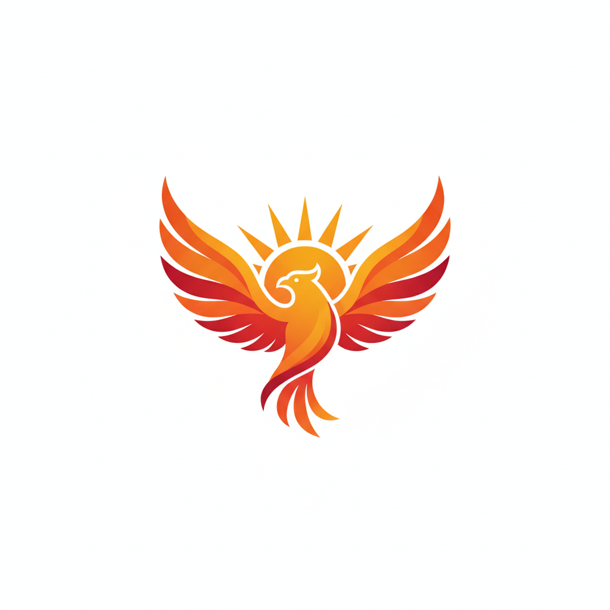

AIエンジニアを目指して、プログラミングを学習中です
もともと『学習』という行為自体が好きで...
 第1弾プロジェクト：SeekPilot
Sequence図・フロー図の作成を自動で行うツール。現在、Geminiと共に開発奮闘中！
学習ツールはドットインストールとprogate、または書籍になります。
アフィリエイト経験者なのである程度はわかりますが、ベースをしっかり固めたいので1から学びなおしています。
以下の言語と資格を学習中です
AIエンジニアを目指し、基礎文法を完遂。現在は「コンテキスト認識型AIアシスタント」の開発に注力しており、論理設計と実装の往復を楽しんでいます。
単なるマークアップに留まらず、外部CSSによる保守性の高い設計を実践。現在はスマホ等のマルチデバイス対応を深掘りしています。
動的サイト構築の要として、現在ドットインストールの推奨ルートに沿って基礎固めを開始。バックエンド視点を持つエンジニアを目指しています。
「隙間時間のみ」「有料教材なし」という縛りプレイで合格を目指す実験的プロジェクト。AIをパートナーに据え、学習過程をリアルタイムで記事化しています。
学習したタグの一覧は、こちら（タグ集）から確認できます。
AIの研究は
AIは半世紀以上前から研究・開発されてきましたが、本格的にはに世に登場し、現在は会社組織でも使われるようになり、一般の人でも利用するようになりました。
SeekPilotでも少し触れましたが、もともとは学習行為が好きで、また業務効率化ということに興味がありました。
当時は私はプログラムについて、読めはするけどコーディングはできず、手直しをするなどが中心でした。
しかし、AIの登場により、プログラムを自分で書けるようになり、またAIを活用してあらゆる部分が効率的に進められるようになりました。
まだまだ、積み上げなければならないことは多いものの、自分のアイデアを形にするために、AIエンジニアを目指して精進してまいります
最終更新：